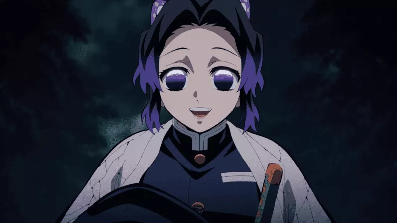

Curiosidades de Kimetsu no Yaiba
O nome da cobra de Obanai Iguro
Obanai “o pilar da serpente”, sempre está com uma cobra em seu ombro, o nome dessa cobra é Kaburamaru e para Obanai ele era muito mais que um animal de estimação e sim seu melhor amigo.
Rengoku queria um animal de estimação
O Kyojuro Rengoku “o pilar das chamas”, sempre quis ter algum animalzinho de estimação, porém nunca teve por causa de seu pai.
A comida favorita de Giyuu Tomioka
A comida favorita de Gyuu Tomioka é salmão com Daikon, ele chega até mesmo a sorrir quando está prestes a comer sua comida favorita.
A roupa de Shinobu Kocho
O uniforme da organização que seria dado para Shinobu, originalmente seria igual ao de Mitsuri, com um grande decote nos peitos, mas a pilar do inseto queimou o uniforme assim que o recebeu e mandou o fabricar um que fosse fechado com todos os botões.
O casal de dubladores em Kimetsu no Yaiba
A Dubladora da Tamayo, Maaya Sakamoto é casada com o dublador do Obanai, Kenichi Suzumura
Laminas de Tecchin
Tanto a nichirin-to de Shinobu quanto de Mitsuri foram projetadas por Tecchin, o melhor e mais experiente ferreiro vivo
Grandeza de poderes
Aparentemente Gyomei Himejima “o pilar da pedra” faz espelho a Kokushibou “a Lua Superior 1”, sendo ambos os mais fortes e responsáveis de suas organizações.
kagaya se tornou lider do esquadrão aos 4 anos
O que mais existe em Demon Slayer são heróis super talentosos que têm a sua trajetória narrada casualmente, mas com surpresa, por outros personagens.
Como é o caso do Hashira da Névoa, Muichiro Tokito, que se tornou um dos pilares com apenas dois meses de treinamento. Mas, Kagaya, o 97º líder do Esquadrão de Caçadores de Demônios ganhou o título aos quatro anos de idade. Certeza que ele se tornou protagonista de muitas falas de mães na Era Taishō: “Seu primo Kagaya virou líder do Esquadrão e você aí… Um Mizunoto”.Tengen e Inosuke são os únicos que usam duas lâminas
É fácil cair na mesmice quando os personagens de um anime utilizam as mesmas armas. Mas, em Demon Slayer, a variedade de técnicas é uma forma de diversificar e manter o leitor, ou espectador, curioso para as habilidades de novos personagens. Isso não se aplica a Tengen e Inosuke.
Os dois são os únicos personagens conhecidos que utilizam duas lâminas Nichirin ao invés de uma. Além disso, ambas são bem diferentes das usuais espadas dos caçadores. Enquanto Inosuke possui as lâminas de suas espadas dentadas, Tengen utiliza duas foices.Gyomei não utiliza laminas Nichirin
Gyomei, o Hashira da Pedra, ainda não foi devidamente apresentado no anime, mas é um dos personagens mais poderosos do grupo. Diferente de outros, ele não utiliza uma lâmina Nichirin e, muito menos, espadas.
Sua arma é uma maça acorrentada a um machado. Em outras palavras, será bem interessante ver suas técnicas de luta representadas no anime.A estratégia do Hashira da Névoa
Roupas são um detalhe a parte em Demon Slayer. Com diversas vestimentas, a animação tem um estilo único para cada personagem. Porém, alguns não são apenas bonitos, mas funcionais.
Como é o caso do kimono de Shinobu, que a permite utilizá-lo como planador. Por outro lado, Muichiro utiliza roupas largas para confundir seus oponentes.
Assim como sua Respiração da Névoa é uma forma de desorientar seus inimigos, ao utilizar roupas maiores que seu número, o Hashira consegue esconder seus movimentos, o tornando imprevisível para seu oponente.A origem da respiração do amor
Possuindo um papel importante no arco da Vila dos Ferreiros, foco da terceira temporada de Demon Slayer, Misturi tem uma das técnicas mais curiosas do anime: a Respiração do Amor. Desenvolvida a partir da Respiração das Chamas, Mitsuri foi discípula de Regoku. Então, podemos esperar um pouco mais de lágrimas lembrando do Hashira das Chamas.
As habilidades de Muzan

Ainda não tivemos grandes participações do vilão Muzan em Demon Slayer, mas sabe-se que seus poderes não são brincadeira. Não apenas capaz de transformar humanos com seu sangue e tornar demônios mais fortes ao compartilhá-lo, Muzan consegue manipular todas as células de seu corpo.
Desta forma, ele pode replicar órgãos e curar qualquer tipo de ferimento. A Respiração do Sol se torna essencial numa luta contra ele, uma vez que a técnica procura criar ferimentos que sejam mais difíceis de serem cicatrizados.